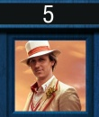
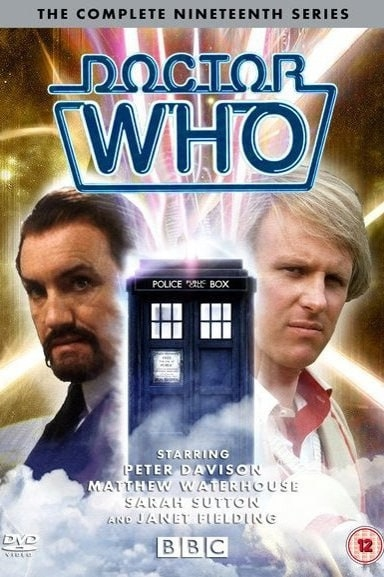
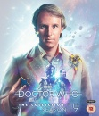
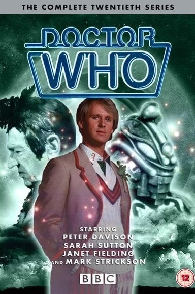
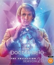

Таблица коллекции |  Навигация по канону |  Связные экранизации |
Таблица коллекции | Навигация по канону | Связные экранизации |





Эра Пятого Доктора
Актёр: Питер Дэвисон


Пятый Доктор (Питер Дэвисон) с Адриком, Ниссой и Тиган сталкивается с Мастером, киберлюдьми и древними силами; в «Землетрясении» гибнет Адрик — первый постоянный спутник, павший в сериале. Сезон балансирует между личной драмой и масштабными угрозами, а «Временной полёт» замыкает арку и подчёркивает цену вмешательств Доктора.
Варианты озвучек, подробности выхода и другие ссылки на просмотр в описаниях серийНаш плейлист сезона в ВК
Таблица сезонов и озвучек


Пятый Доктор с Тиган, Ниссой и новым спутником Турлоу сталкивается с Омегой, Марой, Чёрным Стражем и Мастером; трилогия «Мёртвец Модрин» — «Терминус» — «Просвещение» раскрывает месть Чёрного Стража. В «Демонах короля» Доктор противостоит самозванцу в средневековой Англии, а юбилейный спецвыпуск «Пять Докторов» собирает сразу несколько воплощений Доктора ради спасения Галлифрея — сезон совмещает личные драмы спутников с масштабными временны́ми кризисами и подводит к переменам в команде ТАРДИС.
Варианты озвучек, подробности выхода и другие ссылки на просмотр в описаниях серий


Пятый Доктор с Тиган и Турлоу сталкивается с силурианцами на подводной станции («Воины из глубины»), затем — с пробуждённым злом в реконструкции Гражданской войны («Пробуждение») и с метеоритной угрозой на Фронтиосе. Сезон наращивает напряжение: локальные конфликты оборачиваются масштабными кризисами, а каждая история подчёркивает хрупкость человеческих решений перед лицом древней, равнодушной угрозы.
Варианты озвучек, подробности выхода и другие ссылки на просмотр в описаниях серий